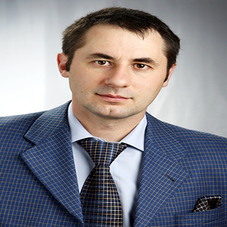
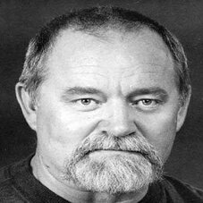

1. Леонард Млодінов. Недосконала випадковість.
Здійснювати спортивні ставки - це здійснювати досліди з випадком. Відомий фізик з Америки Леонард Млодінов в ігровій та доступній формі розповідає в «Недосконалій випадковості» про значення випадку в людському житті. Автор зачіпає і питання спортивного прогнозування. Дана книга про статистику, випадки, ставки і не тільки, що відмінно підійде для новачків і для професійних Беттери.
2. Ніко Марттінен. Створюємо прибуткову стратегію ставок на футбол за допомогою статистичного моделювання.
У статті Ніко Марттінена йдеться про створення прибутковою стратегії ставок на футбол. Для цього застосовується статистичне моделювання. Стаття розкриває майже всі аспекти ефективної гри в букмекерських конторах: поняття маржі, азіатські гандикапи, коефіцієнти, live і фіксовані ставки та інші основні моменти. Запропонована авторська система футбольних ставок не вимагає великих знань в областях математики і статистики. Основні переваги алгоритму Ніко Марттінена:
- Несложные статистические модели.
- Доступный язык.
- Широкий подход.
3. С.Д. Штовба: Прогнозування результатів футбольних матчів на основі нечітких правил.
С.Д. Штовба написав статтю, в якій на основі нечітких правил прогнозуються результати футбольних матчів. У статті показується прогноз на розподіл підсумкових місць в таблиці українського чемпіонату з футболу. Система ґрунтується на нечіткій логіці, яка запропонована Л. Заде. Математичний розрахунок спортивних ставок автора реалізується за допомогою програми Matlab. Плюси системи:
- Доступні моделі.
- Точний прогноз.
- Не потрібно великого масиву даних.
4. Ян Макхеіл. Філ Скарф. Прогнозування міжнародних футбольних матчів за допомогою двовимірного дискретного розподілу.
У статті Філа Скарф і Яна Макхеіла розкривається суть прогнозування футбольних міжнародних матчів з використанням двомірного дискретного розподілу. Автори статті заявляють, що в спортивних ставках краще використовувати математику, ніж звичайний варіант імовірнісного підходу. За основу взято матчі, що проводяться з 1993 по 2004 рік. Особливості статті:
- Легкість в побудові моделі.
- Висока доступність моделі.
- Мінусом є низький відсоток перемог.
5. Джирі Лахвіка. Розкриття стратегії Фібоначчі: Чи дійсно можна вигравати гроші на футбольних нічиїх.
Один з найбільш поширених ставочних міфів розкривається в статті Джирі Лахвіка. Там розглядається стратегія Фібоначчі, в якій переконується, що вигравати кошти можна на нічийних футбольних матчах. Результати статті можна застосовувати до чисел Фібоначчі і стратегії Мартингейла. Аналізується інформація про 60 тисяч матчів у футбольних чемпіонатах з Європи. Плюси статті:
- Доступнфа мова.
- Неспростовність результатів.
Завантажити статті повністю можна тут

